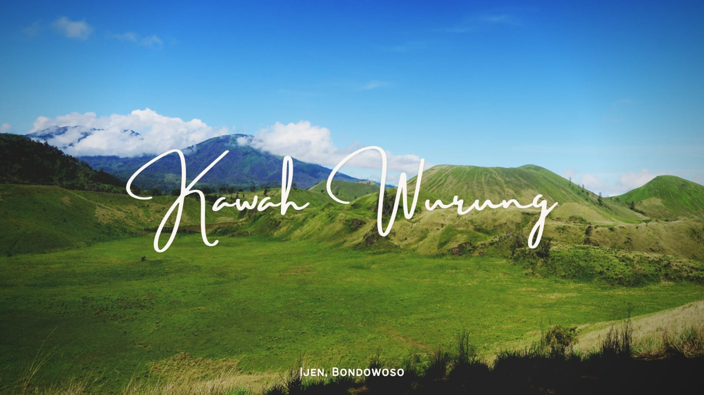

Tempat bagus tidak harus ramai
Jalur Sunyi bukan daftar "10 tempat wajib kunjung". Di sini setiap tempat dipilih karena suasananya: ada yang cocok untuk orang yang butuh hening, ada yang jernih dan teduh, dan ada yang lembut serta terbuka.

Pilih suasana hatimu
- Butuh hening: hamparan savana Kawah Wurung, Bondowoso.
- Ingin berenang di air bening: Danau Kaco di Kerinci dan Pantai Pasir Panjang di Kepulauan Kei.
Tiga aturan Jalur Sunyi
- Datang seperti tamu, bukan seperti penonton.
- Bawa pulang sampahmu, tinggalkan hanya jejak kaki.
- Jika sebuah tempat sudah ramai, beri ia waktu untuk bernapas.